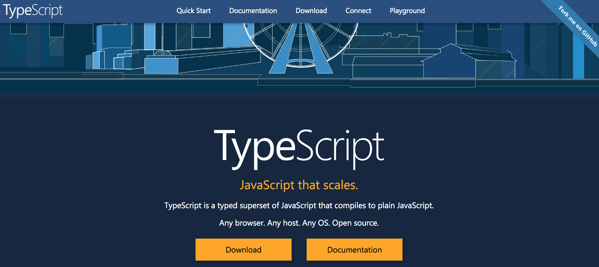
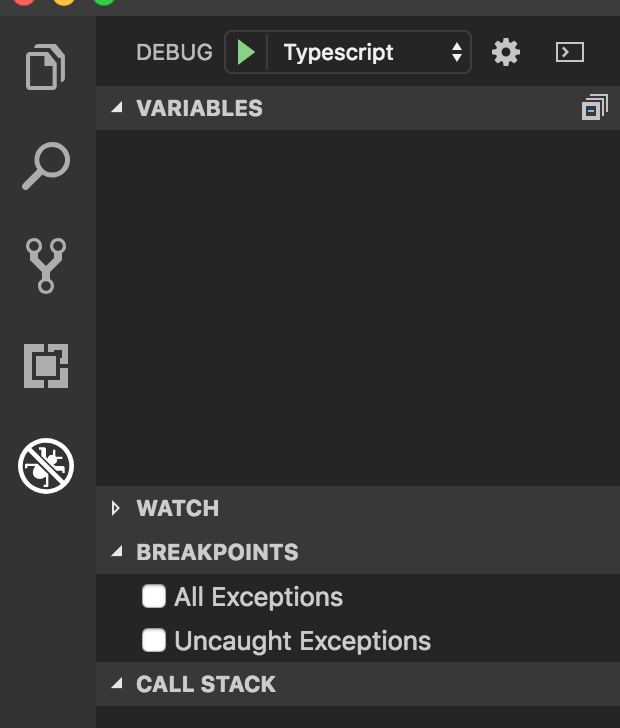
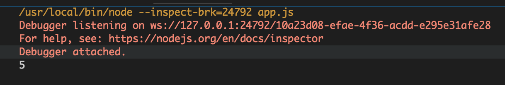
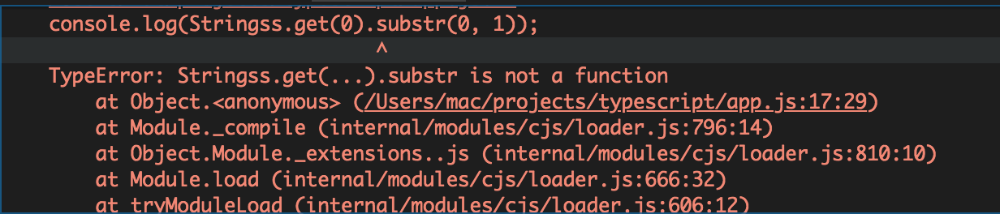

转载请注明出处：葡萄城官网，葡萄城为开发者提供专业的开发工具、解决方案和服务，赋能开发者。
原文出处：https://blog.bitsrc.io/understanding-generics-in-typescript-1c041dc37569

本文介绍TypeScript中泛型（Generics）的概念和用法，它为什么重要，及其使用场景。我们会以一些清晰的例子，介绍其语法，类型和如何构建参数。你可以在你的集成开发环境中跟着实践。
要从本文中跟着学习的话，你需要在电脑上准备以下东西：
node -vnpm install -g typescript本文是写给各层次的TypeScript开发人员的，包括但并不只是初学者。 这里给出了设置工作环境的步骤，是为了照顾那些TypeScript和Visual Studio Code的新手们。
在TypeScript中，泛型是一种创建可复用代码组件的工具。这种组件不只能被一种类型使用，而是能被多种类型复用。类似于参数的作用，泛型是一种用以增强类（classes）、类型（types）和接口（interfaces）能力的非常可靠的手段。这样，我们开发者，就可以轻松地将那些可复用的代码组件，适用于各种输入。然而，不要把TypeScript中的泛型错当成any类型来使用——你会在后面看到这两者的不同。
类似C#和Java这种语言，在它们的工具箱里，泛型是创建可复用代码组件的主要手段之一。即，用于创建一个适用于多种类型的代码组件。这允许用户以他们自己的类使用该泛型组件。
在计算机中创建一个新文件夹，然后使用VS Code 打开它（如果你跟着从头开始操作，那你已经安装好了）。
在VS Code中，创建一个app.ts文件。我的TypeScript代码都会放在这里面。
把下面打日志的代码拷贝到编辑器中：
console.log("hello TypeScript");按下F5键，你会看到一个像这样的launch.json文件：
{
// Use IntelliSense to learn about possible attributes.
// Hover to view descriptions of existing attributes.
// For more information, visit: https://go.microsoft.com/fwlink/?linkid=830387
"version": "0.2.0",
"configurations": [
{
"type": "node",
"request": "launch",
"name": "TypeScript",
"program": "${workspaceFolder}\\app.ts",
"outFiles": [
"${workspaceFolder}/**/*.js"
]
}
]
}
里面的name字段的值，本来是Launch Program，我把它改成了TypeScript。你可以把它改成其他值。
点击Terminal Tab，选择Run Tasks，再选择一个Task Runner："TypeScript Watch Mode"，然后会弹出一个tasks.json文件，把它改成下面像这样：
{
// See https://go.microsoft.com/fwlink/?LinkId=733558
// for the documentation about the tasks.json format
"version": "2.0.0",
"tasks": [
{
"label": "echo",
"type": "shell",
"command": "tsc",
"args": ["-w", "-p","."],
"problemMatcher": [
"$tsc-watch"
],
"isBackground": true
}
]
}
在app.ts所在的目录，创建另一个文件tsconfig.json。把下面的代码拷贝进去:
{
"compilerOptions": {
"sourceMap": true
}
}
这样，Task Runner就可以把TypeScript编译成JavaScript，并且可监听到文件的变化，实时编译。
再次点击Ternimal标签，选择Run Build Task，再选择tsc: watch - tsconfig.json，可以看到终端出现的信息：
[21:41:31] Starting compilation in watch mode…
你可以使用VS Code的调试功能编译TypeScript文件。

设置好了开发环境，你就可以着手处理TypeScript泛型概念相关的问题了。
TypeScript中不建议使用any类型，原因有几点，你可以在本文看到。其中一个原因，就是调试时缺乏完整的信息。而选择VS Code作为开发工具的一个很好的理由，就是它带来的基于这些信息的智能感知。
如果你有一个类，存储着一个集合。有方法向该集合里添加东西，也有方法通过索引获取集合里的东西。像这样:
class Collection {
private _things: string[];
constructor() {
this._things = [];
}
add(something: string) {
this._things.push(something);
}
get(index: number): string {
return this._things[index];
}
}
你可以很快辨识出，此集合被显示定义为一个string类型的集合，显然是不能在其中使用number的。如果想要处理number的话，可以创建一个接受number而不是string的集合。着是一个不错的选择，但有一个很大的缺点——代码重复。代码重复，最终会导致编写和调试代码的时间增多，并且降低内存的使用效率。
另一个选择，是使用any类型代替string类型定义刚才的类，像下面这样：
class Collection {
private _things: any[];
constructor() {
this._things = [];
}
add(something: any) {
this._things.push(something);
}
get(index: number): any {
return this._things[index];
}
}
此时，该集合支持你给出的任何类型。如果你创建像这样的逻辑构建此集合的话：
let Stringss = new Collection();
Stringss.add("hello");
Stringss.add("world");
这添加了字符串"hello"和"world"到集合中，你可以打出像length这样的属性，返回任意一个集合元素的长度。
console.log(Stringss.get(0).length);
字符串"hello"有五个字符，运行TypeScript代码，你可以在调试模式下看到它。

请注意，当你鼠标悬停在length属性上时，VS Code的智能感知没有提供任何信息，因为它不知道你选择使用的确切类型。当你像下面这样，把其中一个添加的元素修改为其他类型时，比如number，这种不能被智能感知到的情况会体现得更加明显：
let Strings = new Collection();
Strings.add(001);
Strings.add("world");
console.log(Strings.get(0).length);
你打出一个undefined的结果，仍然没有什么有用信息。如果你更进一步，决定打印string的子字符串——它会报运行时错误，但不指不出任何具体的内容，更重要的是，编译器没有给出任何类型不匹配的编译时错误。
console.log(Stringss.get(0).substr(0,1));

这仅仅是使用any类型定义该集合的一种后果罢了。
刚才使用any类型导致的问题，可以用TypeScript中的泛型来解决。其中心思想是类型安全。使用泛型，你可以用一种编译器能理解的，并且合乎我们判断的方式，指定类、类型和接口的实例。正如在其他强类型语言中的情况一样，用这种方法，就可以在编译时发现你的类型错误，从而保证了类型安全。
泛型的语法像这样：
function identity<T>(arg: T): T {
return arg;
}
你可以在之前创建的集合中使用泛型，用尖括号括起来。
class Collection<T> {
private _things: T[];
constructor() {
this._things = [];
}
add(something: T): void {
this._things.push(something);
}
get(index: number): T {
return this._things[index];
}
}
let Stringss = new Collection<String>();
Stringss.add(001);
Stringss.add("world");
console.log(Stringss.get(0).substr(0, 1));
如果将带有尖括号的新逻辑复制到代码编辑器中，你会立即注意到"001"下的波浪线。这是因为，TypeScript现在可以从指定的泛型类型推断出001不是字符串。在T出现的地方，就可以使用string类型，这就实现了类型安全。本质上，这个集合的输出可以是任何类型，但你指明了它应该是string类型，所以编译器推断它就是string类型。这里使用的泛型声明是在类级别，它也可以在其他级别定义，如静态方法级别和实例方法级别，你稍后会看到。
你可以在泛型声明中，包含多个类型参数，它们只需要用逗号分隔，像这样：
class Collection<T, K> {
private _things: K[];
constructor() {
this._things = [];
}
add(something: K): void {
this._things.push(something);
}
get(index: number): T {
console.log(index);
}
}
声明时，类型参数也可以在函数中显式使用，比如：
class Collection {
private _things: any[];
constructor() {
this._things = [];
}
add<A>(something: A): void {
this._things.push(something);
}
get<B>(index: number): B {
return this._things[index];
}
}
因此，当你要创建一个新的集合时，在方法级别声明的泛型，现在也会在方法调用级别中被指示，像这样：
let Stringss = new Collection();
Stringss.add<string>("hello");
Stringss.add("world");
你还可注意到，在鼠标悬停时，VS Code智能感知能够推断出第二个add函数调用仍然是string类型。
泛型声明同样适用于静态方法:
static add<A>(something: A): void {
_things.push(something);
}
虽然初始化静态方法时，可使用泛型类型，但是，对初始化静态属性则不能。
现在，你已经对泛型有比较好的认识，是时候提到泛型的核心缺点及其实用的解决方案了。使用泛型，许多属性的类型都能被TypeScript推断出来，然而，在某些TypeScript不能做出准确推断的地方，它不会做任何假设。为了类型安全，你需要将这些要求或者约束定义为接口，并在泛型初始化中继承它们。
如果你有这样一个非常简单的函数：
function printName<T>(arg: T) {
console.log(arg.length);
return arg;
}
printName(3);
因为TypeScript无法推断出arg参数是什么类型，不能证明所有类型都具有length属性，因此不能假设它是一个字符串（具有length属性）。所以，你会在length属性下看到一条波浪线。如前所述，你需要创建一个接口，让泛型的初始化可以继承它，以便编译器不再报警。
interface NameArgs {
length: number;
}
你可以在泛型声明中继承它：
function printName<T extends NameArgs>(arg: T) {
console.log(arg.length);
return arg;
}
这告诉TypeScript，可使用任何具有length属性的类型。 定义它之后，函数调用语句也必须更改，因为它不再适用于所有类型。 所以它应看起来是这样：
printName({length: 1, value: 3});
这是一个很基础的例子。但理解了它，你就能看到在使用泛型时，设置泛型约束是多么有用。
一个活跃于Stack Overflow社区的成员，Behrooz，在后续内容中很好的回答了这个问题。在TypeScript中使用泛型的主要原因是使类型，类或接口充当参数。 它帮助我们为不同类型的输入重用相同的代码，因为类型本身可用作参数。
泛型的一些好处有：
function test<T>(input: T[]): T {
//…
}
允许你确保输入和输出使用相同的类型，尽管输入是用的数组。
Array<Item> a = [];
变量数组时，你可以由智能感知访问到Item类型的所有成员。
你已经看完了泛型概念的概述，并看到了各种示例来帮助揭示它背后的思想。 起初，泛型的概念可能令人困惑，我建议，把本文再读一遍，并查阅本文所提供的额外资源，帮助自己更好地理解。泛型是一个很棒的概念，可以帮助我们在JavaScript中，更好地控制输入和输出。请快乐地编码吧！